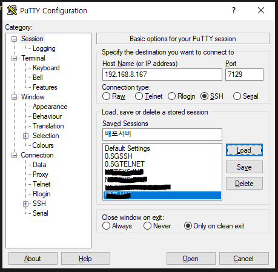
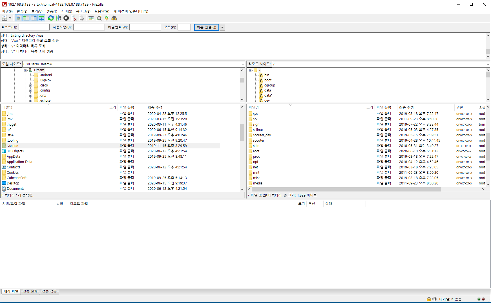

Putty

SSH :
SSH란 Secure Shell Protocol, 즉 네트워크 프로토콜 중 하나로 컴퓨터와 컴퓨터가 인터넷과 같은 Public Network를 통해 서로 통신을 할 때 보안적으로 안전하게 통신을 하기 위해 사용하는 프로토콜입니다.
대표적인 사용의 예는 다음과 같습니다.
이 둘은 개발 공부를 하시는 분이라면 한 번쯤은 사용해보셨을 것이라고 생각합니다.
먼저 데이터 전송의 예로는 원격 저장소인 깃헙이 있을 수 있습니다.
소스 코드를 원격 저장소인 깃헙에 푸쉬할 때 여러분은 SSH를 활용해 파일을 전송하게 됩니다.
Filezillar

SFTP :
SFTP(Secure File transfer protocol) - SSH와 마찬가지로 전송시 암호화시켜서 전송을 하게 되는데 그 중에 FTP와 같이 파일을 전송할 때 암호화 시켜서 전송합니다.
SSH에 부가적으로 있는 기능들 중 하나의 기능입니다.
FTP와 같은 역할을 하지만, 사용하는 포트는 FTP 포트(기본 21포트) 가 아닌 SSH 접속시 사용하는 포트를 사용하고, SSH 접속 계정으로 로그인 할 수 있는 FTP 입니다.
FTP의 형태를 가지고 있지만 그 안에 내용물은 SSH를 이용해서 연결을 하는 것이 바로 sFTP입니다.